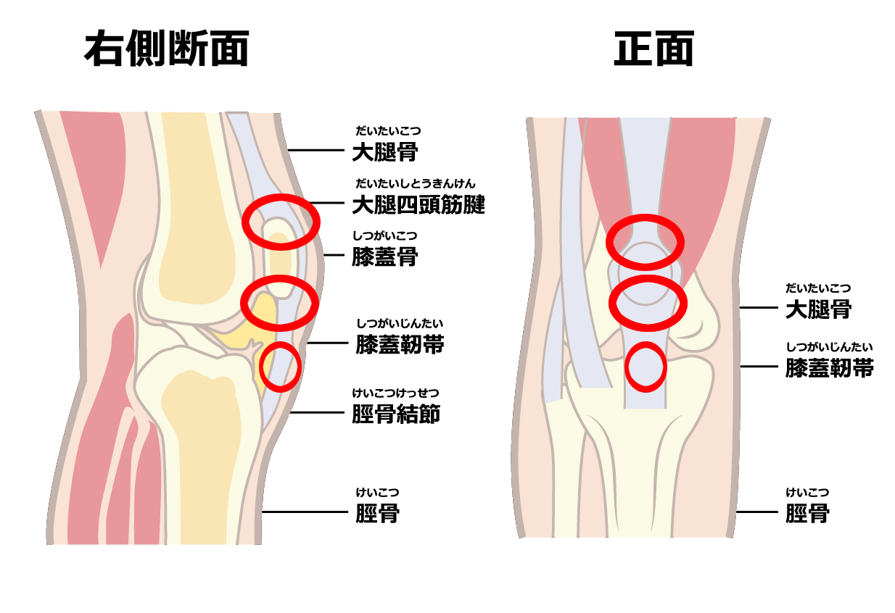
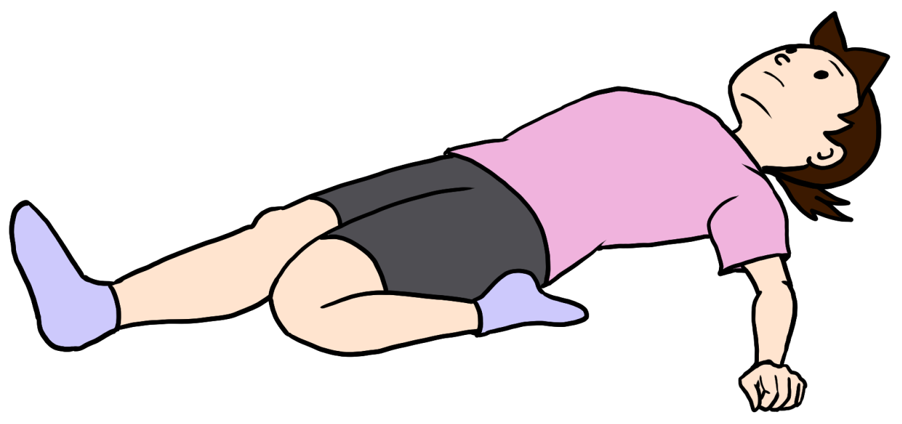

ジャンパー膝（膝蓋腱炎）
ジャンパー膝とは
ジャンパー膝（膝蓋腱炎）は、ジャンプやダッシュを繰り返すことで膝のお皿（膝蓋骨）の下にある膝蓋腱に炎症が起き、痛みや腫れなどが生じるスポーツ障害です。
特にバレーボール、バスケットボールやバドミントン、キックやダッシュなどを繰り返しするサッカーなどのスポーツ選手や、ハードル走や幅跳びなどのジャンプ動作を頻繁に行う陸上競技の選手に多くみられます。
競技レベルが上がってくる中学～高校にかけて発症リスクが高くなる傾向にあり、痛みを放置すると日常生活にも支障をきたすようになるため、早めに対処することが大切です。

症状
膝の下の痛み、圧痛
膝に負担にかかった時（走る、ジャンプする、ボールを蹴るなど）に痛みが生じる
原因
膝蓋腱は、膝を伸ばす時に働く太ももの前側の大腿四頭筋の端の部分に当たり、膝のお皿を介して脛骨を持ち上げる働きをします。
ジャンプなどの動作は筋肉を引っ張る力が大きくなり、膝に強い負荷がかかります。これを繰り返すことで腱や付着部に炎症が起き、痛みが生じます。
また、大腿四頭筋や下腿の筋肉が硬いと、腱への負担が増えます。
診断
画像診断により痛みの原因を調べます。
レントゲン検査では骨折の有無を、MRIでは筋肉や神経、靱帯の損傷や炎症の有無を、エコーでは筋肉の動きや、筋肉・靱帯の損傷や炎症の有無を調べます。
痛みの原因がジャンパー膝以外の疑いがないか、複数の検査が必要となります。
治療
初期のジャンパー膝は、運動後のアイシングで痛みを鎮め、炎症を抑えるように心がける必要があります。
筋力のパワー発揮や着地時の衝撃吸収など、ジャンプ動作のフォーム改善も必要になることがあります。
日常生活での注意点
スポーツを始める前に十分なウォーミングアップを行い、股関節や大腿四頭筋、足首の柔軟性をアップさせましょう。
運動後も同様のストレッチを行い、筋疲労の蓄積を防止しながら、炎症を避けるためのアイシングを併用すると効果的です。
痛みがある場合は、無理のない範囲で行ってください。
